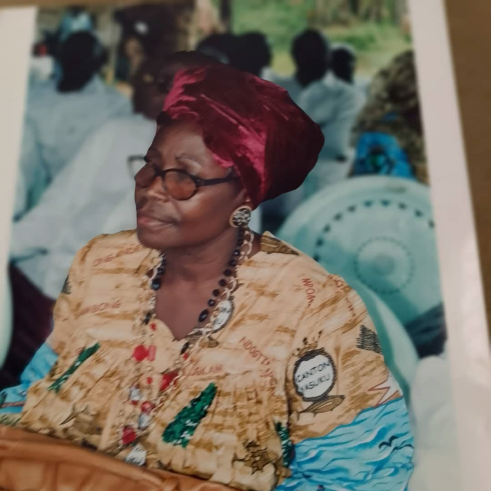

Diyouckey 'Coco' Nkomba
Fils de Yassoukou & Yakalag · Fondateur de bakoko.org
Son of Yassoukou & Yakalag · Founder of bakoko.org

images/coco-nkomba.jpg
Add photo as:images/coco-nkomba.jpg
Diyouckey 'Coco' Nkomba, lors d'un événement communautaire Elog Mpoo
Diyouckey 'Coco' Nkomba at an Elog Mpoo community gathering
Projets
Archives communautaires Elog Mpoo — langue, histoire, généalogie, tradition orale
Elog Mpoo community archives — language, history, genealogy, oral tradition
« Les Bakoko sont venus avec le fleuve — et le fleuve ne les a pas oubliés. » — Proverbe Elog Mpoo, préservé sur bakoko.org
'Coco' Nkomba a fait de cette parole sa vocation tranquille : où qu'il se trouve dans le monde, ne pas oublier.
'Coco' Nkomba est un fils Yassoukou et Yakalag — deux des treize clans des Elog Mpoo (Bakoko), dont les cantons longent les rives de la Sanaga dans l'arrondissement d'Edéa 1 et de Mouanko, Région du Littoral au Cameroun. Son double nom porte le poids de deux lignées : Nkomba est son héritage maternel ; le prénom Diyouckey honore le patriarche de la famille qui décida de lui donner son propre nom — comme un murmur dans ces forêts et villages fluviaux depuis plus longtemps que ne peuvent le confirmer les archives écrites. Il est aussi connu sous le nom de Coco — le nom du quotidien, le nom de l'accueil, le nom de l'affection, un fils bien-aimé dans son village d'Elogkam.
Ce qu'il a accompli avec bakoko.org n'est pas un projet technologique, bien qu'il soit construit avec l'esprit rigoureux de quelqu'un également à l'aise dans le code et dans la chronique. C'est, dans son essence, un acte de dévotion ancestrale — le prolongement numérique d'un impératif oral : tu dois te souvenir, et tu dois le transmettre.
Les ancêtres qui l'ont formé
Derrière chaque conteur se trouve une longue procession de ceux qui lui ont appris, les premiers, que les histoires ont de l'importance. 'Coco' Nkomba a été formé par une famille dont le savoir a traversé en lui comme l'eau traverse un delta.
Son père de nom, Samuel Collothier Nkomba, lui a donné un nom qui porte sa propre géographie — la lignée Nkomba, enracinée dans le territoire Yakalag, dans la terre au-dessus de la Sanaga où ses ancêtres se sont un jour dressés pour bloquer les caravanes coloniales allemandes. Ce n'est pas une métaphore. C'est consigné dans les archives orales de l'ACTEM : les Yasuku et leurs proches alliés ont physiquement bloqué les caravanes allemandes qui tentaient de traverser le Nyong dans les années 1890, choisissant la souveraineté plutôt que la sécurité.
Sa mère, Ebobisse Berthe Dora, vient de la lignée Ebobisse-Eyike — une famille parmi les plus actives dans la gouvernance Elog Mpoo, représentée jusqu'au sein de la direction administrative de l'ACTEM. Elle est devenue l'ancre de sa famille : celle qui a nourri, nommé, prié et instruit. Une mère Bakoko n'est pas simplement un parent — elle est, dans la tradition de la société Bilemba des femmes, une gardienne du droit communautaire, du savoir médicinal et de la continuité cérémonielle. Berthe Dora a tenu ce rôle sans qu'il soit nécessaire de le nommer.
L'œuvre qu'il accomplit
'Coco' Nkomba a construit bakoko.org comme un acte d'amour et d'urgence historique — parce qu'il comprend, comme le comprennent tôt ou tard tous les membres de la diaspora, que la distance est la complice du temps. Les familles se dispersent. Les grands-parents meurent. Les langues s'amincissent jusqu'à quelques phrases mémorisées. Le jour vient où un petit-enfant ne peut plus demander à un ancien ce que signifie un proverbe.
Le site traite la tradition orale non pas comme un substitut inférieur à l'histoire écrite, mais comme une source primaire dotée de sa propre rigueur et de sa propre autorité — la même position académique défendue par le chercheur doctoral français Cosme Dikoumé et l'anthropologue Christine Buhan dans leurs travaux de référence sur les Elog Mpoo. Ce que Coco Nkomba a fait, c'est mettre ce principe académique sous une forme accessible à tout enfant Bakoko disposant d'un téléphone à Edéa, Dihane, Mouanko, Douala, Paris ou en Virginie.
Le site préserve les récits d'origine — l'ancien voyage depuis l'Égypte et le lac Tchad, à travers la montagne sacrée de Ngog Lituba, berceau de la dispersion des Elog Mpoo. Il conserve la langue : Mbog e le yo — « le village est à toi », phrase d'accueil. Bot bi mbog — « gens du clan », expression d'appartenance. Ndah nyi — « la maison est ici », salutation sur le seuil. Il documente la résistance des années 1890, lorsque des communautés Bakoko ont fait face aux expéditions militaires allemandes qui ont tué des centaines de personnes et pillé des tambours sacrés.
Un conteur au sens ancien du terme
Dans la tradition des Elog Mpoo, les plus grands conteurs ne sont pas des divertisseurs. Ce sont des gardiens. Les formes orales Bakoko — le Ngoso (poésie chantée), l'Ondende (vers avec cordes), les chants rituels de la société Njéé — n'existent pas pour la représentation mais pour la préservation. Un conteur dans cette tradition est quelqu'un qui prend ce qui lui a été confié et refuse de le laisser se dissoudre.
'Coco' Nkomba fait cela à travers les langues et les fuseaux horaires. Il le fait à travers un site qui accueille les contributions des locuteurs de la diaspora en France, en Belgique et en Amérique du Nord. Il le fait en nommant publiquement ceux qui l'ont formé : ses parents, sa famille élargie, les communautés d'Elogkam et de Lobethal dont la vie quotidienne était elle-même un acte de continuité culturelle.
Il est, dans le sens le plus plein de la tradition Bakoko : mut'a mbog — une personne du clan. Où qu'il se trouve, le village est encore le sien. Et grâce au travail qu'il accomplit, il le sera aussi pour ses descendants.
"The Bakoko came with the river — and the river has not forgotten them." — Elog Mpoo proverb, preserved on bakoko.org
Diyouckey 'Coco' Nkomba has made it his life's quiet vocation to ensure that, wherever in the world he finds himself, he too does not forget.
'Coco' Nkomba is a son of Yassoukou & Yakalag — two of the thirteen clans of the Elog Mpoo (Bakoko), whose cantons sit in the Edéa 1 and Mouanko arrondissements along the banks of the Sanaga River in Cameroon's Littoral Region. His double name carries the weight of two lineages: Nkomba is his maternal inheritance; the name Diyouckey honors the family patriarch who decided to name him after himself — a name that has been whispered in these forests and river settlements longer than any written record can confirm. He is also known as Coco — the everyday name, the name of welcome, the name of affection, a beloved son in his Elogkam village.
What he has done with bakoko.org is not a technology project, though it is built with the disciplined mind of someone equally at home in code and chronicle. It is, at its core, an act of ancestral devotion — a digital extension of an oral imperative: you must remember, and you must tell it forward.
The Ancestors Who Made Him
Behind every storyteller stands a long procession of those who first taught them that stories matter. 'Coco' Nkomba has been shaped by a family whose knowledge moved through him like water through a delta.
His name-father, Samuel Collothier Nkomba, gave him a name that carries its own geography — the Nkomba lineage, rooted in Yakalag territory, in the soil above the Sanaga River where his ancestors once stood to block German colonial caravans from crossing. This is not metaphor. It is documented in the ACTEM oral record — the Yasuku and their nearest kin physically blocked German caravans from crossing the Nyong in the 1890s, choosing sovereignty over safety.
His mother, Ebobisse Berthe Dora, comes from the Ebobisse-Eyike lineage — a name found among the most active families in Elog Mpoo governance, including in the ACTEM's own administrative leadership. She became the anchor of her family: the one who fed, named, prayed over, and instructed. A Bakoko mother is not merely a parent — she is, in the tradition of the Bilemba women's society, a holder of community law, medicinal knowledge, and ceremonial continuity. Berthe Dora carried that role without ceremony requiring anyone to name it.
The Work He Is Doing
Coco Nkomba built bakoko.org as an act of love and of historical urgency — because he understands, as all diaspora community members eventually understand, that distance is time's co-conspirator. Families scatter. Grandparents die. Languages thin to a few remembered phrases. The day arrives when a grandchild can no longer ask an elder what a proverb means.
The website treats oral tradition not as a lesser substitute for written history but as a primary source with its own rigor and authority — the same scholarly position advanced by the French doctoral researcher Cosme Dikoumé and the anthropologist Christine Buhan in their landmark academic works on the Elog Mpoo. What Coco Nkomba has done is put that scholarly principle into a form accessible to any Bakoko child with a phone in Edéa, Dihane, Mouanko, Douala, Paris, or Virginia.
The site preserves origin narratives — the ancient journey from Egypt and Chad, through the sacred mountain of Ngog Lituba, the cradle of the Elog Mpoo dispersal. It holds the language: Mbog e le yo — "the village is yours," a phrase of welcome. Bot bi mbog — "people of the clan," an expression of belonging. Ndah nyi — "the house is here," the greeting at a threshold. It documents the resistance of the 1890s, when Bakoko communities faced German military expeditions that killed hundreds and looted sacred drums.
A Storyteller in the Old Sense
In the Elog Mpoo tradition, the greatest storytellers are not entertainers. They are guardians. The oral forms of the Bakoko — the Ngoso (sung poetry), the Ondende (verse with strings), the ritual songs of the Njéé society — exist not for performance but for preservation. A storyteller in this tradition is someone who takes what was handed to them and refuses to let it dissolve.
'Coco' Nkomba does this across languages and time zones. He does it through a website that welcomes contributions from diaspora speakers in France, Belgium, and North America. He does it by publicly naming the people who made him: his parents, his extended family, the communities of Elogkam and Lobethal whose daily lives were themselves acts of cultural continuity.
He is, in the fullest sense of the Bakoko tradition: mut'a mbog — a person of the clan. Wherever he finds himself, the village is still his. And because of the work he is doing, it will be his descendants' too.
« Mut'a mbog — une personne du clan. Où qu'il se trouve, le village est encore le sien. »
"Mut'a mbog — a person of the clan. Wherever he finds himself, the village is still his."
— Tradition Elog Mpoo / Elog Mpoo tradition